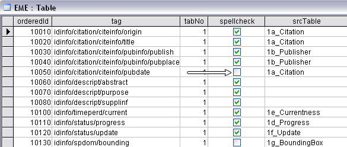
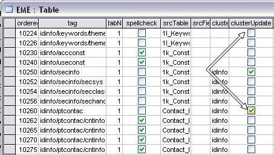
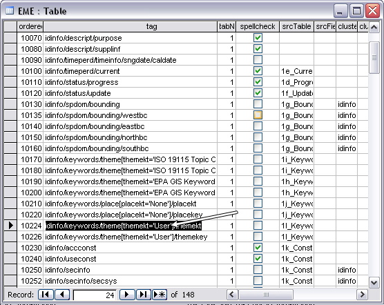

EPA Metadata Editor (EME)
Customizing the EPA Metadata Editor Database
The EME utilizes a Microsoft Access database to supply default
information within the user interface. Information stored in this database can
be modified by the user to include new data or to change defaults that are
used by the 'Set Default' buttons. Making these changes requires that the
user have Microsoft Access installed locally on their machine.
Database Structure
The database is structured to align closely with the flow of the
user interface. As such, all tables are named according to the location in
which their information resides in the EME user interface. All tables that
have information located on tab 1 of the user interface begin with a 1. All
tables that store information located on tab 2 of the user interface begin
with a 2. All tables that store information located on tab 3 of the database
begin with a 3. The tables are also ordered sequentially by letter. As such,
when sorted by name, the tables generally flow with the order of the elements
as they are located in the user interface, starting with the top
left.
Each table has a column in it called 'default'. This column
controls what is selected in the EME when the user clicks on the 'Set Default'
or 'D' buttons. Users may change the defaults used by the EME by selecting the
checkbox next to the entry of their choice. Note that you will need to uncheck
the currently selected default when selecting a new default.
Editing the Database
To modify the EME database, take the following steps:
- Navigate to Tools --> Open Database.
- Locate and open a table of interest (e.g., "1b_Publisher").
- Change the default by selecting a new default entry and deselecting the
existing default entry.
- Add new information by adding a new row to the table and entering your
own data.
- If you don't want anything to be selected as default for a particular
field, deselect all checkboxes in the user interface.
- Close the database.
- Click on the 'Refresh DB' button to update the user interface. You will
need to click this button for each tab where changes should be
reflected.

Special Database Edits
There are some edits that require changes to be made in the
'EME' table. These include the theme keyword thesaurus and the compound
element behavior settings. Any time a change is made in the EME table,
ArcCatalog must be closed and reopened for the new settings to take effect.
Specifying Spell-check Behavior
The EME table contains a
column for specifying which fields are searched when a user spell-checks a
metadata record. This field is called spell-check. This field can be enabled
(checked) or disabled (unchecked) for each element in the EME user
interface. Fields that have the spell-check field checked (enabled) will be
included when the spell check feature is used from the EME user interface.

Setting Compound Element Update Behavior
(Cluster Update Behavior)
Compound element update behavior affects
the way the EME updates compound elements in a metadata record. Compound
elements are elements that contain other elements. For example, the contact
information element is a compound element that is comprised of fields such
as contact person, contact address, etc. The EME user interface does not
expose the entire set of elements contained in the FGDC content standard. As
such, there are some cases where only portions of a compound element are
available for a user to edit them. Users may choose to specify whether or
not the EME replaces an entire compound element when saving information to
the record or to only save the individual elements within the compound
element that were updated. The EME table allows the user to specify settings
for each compound element individually. By default, all elements are set to
replace the entire compound element. It is recommended that users retain
this default setting unless there is a good reason to change it for
particular fields.
This is set using the clusterUpdate field in the
EME table. If you would like to replace the entire content of a compound
element, select the clusterUpdate checkbox for that element. If you would
like to only update individual elements within a compound element, deselect
the clusterUpdate checkbox for that element. If an entire compound element
is replaced by the EME, all individual components of that element are
replaced. If the individual elements of a compound element are replaced
instead of the entire compound element, then some elements may not be
overwritten within a compound element. After this is done, you will need to
close and re-open ArcCatalog for the changes to take effect.
One
example of this is the contact information compound element. The EME allows
the user to specify information for many fields of the contact information
element, but there are some fields, such as hours of service, where this
information is not available in the EME. In those cases, if the user
deselects the clusterUpdate checkbox, the individual element (in this
example hours of service) will remain stored in the compound element along
with the new contact information. If the user has selected the clusterUpdate
checkbox, then the hours of service would be removed and replaced by the new
contact information.

Specifying a Theme
Keyword Thesaurus for User-defined Keywords
The theme keyword
thesaurus information is stored in the EME table. To change this setting,
you will need to modify the tag called
"idinfo/keywords/theme[themekt='User']/themekt". Change the term 'User' to
the desired term to be used for the keyword thesaurus (e.g., 'My Personal
Thesaurus'). After this is done, you will need to close and re-open
ArcCatalog for the changes to take effect.

Configuring the EME to Point to a New Database
Location
Users can choose to point to a database that is stored in a
different location than the default location provided by the EME. This allows the EME
database to be shared by multiple users if desired. By default, the EME
database is placed into the install directory on the user's machine, in a sub-directory called template (usually "C:\Program Files\Innovate! Inc\EPA Metadata Editor\template"). The EME also creates an editable copy of the EME in each user's user directory (e.g., "C:\Users\jzichichi\AppData\Roaming\Innovate! Inc\EPA Metadata Editor"). EME makes this copy so that the operational database is not write-protected.
The EME database location is specified in a setting stored in the config.xml
file associated with the EME. This file is located in the install directory
on your machine (usually "C:\Program Files\Innovate! Inc\EPA Metadata Editor\template).
When EME starts, it looks for the database in the following locations:
- Check and use if the mdb exists where eme config file says (if one specified)
- Check and use if the mdb exists in users own area
- Otherwise make a copy of the one under template into the user's own area.
You can copy and paste the EME database to a new location and point to this new location in the EME's config.xml file. To specify the new location where the EME is stored, change the
entry called "MdbFilepathname" to your new location. You must include the
full path to the database, including the database name in the entry (e.g.,
C:\temp\metadata.mdb). Make sure to close and re-open ArcCatalog once you
have made the change.
It is recommended to leave a back-up of the original
database in the original installation directory so that the EME has a
failover database to access if the new location is unavailable.